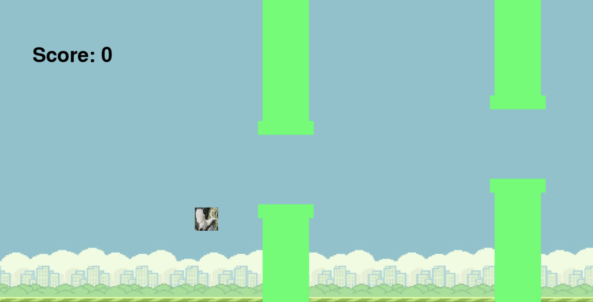
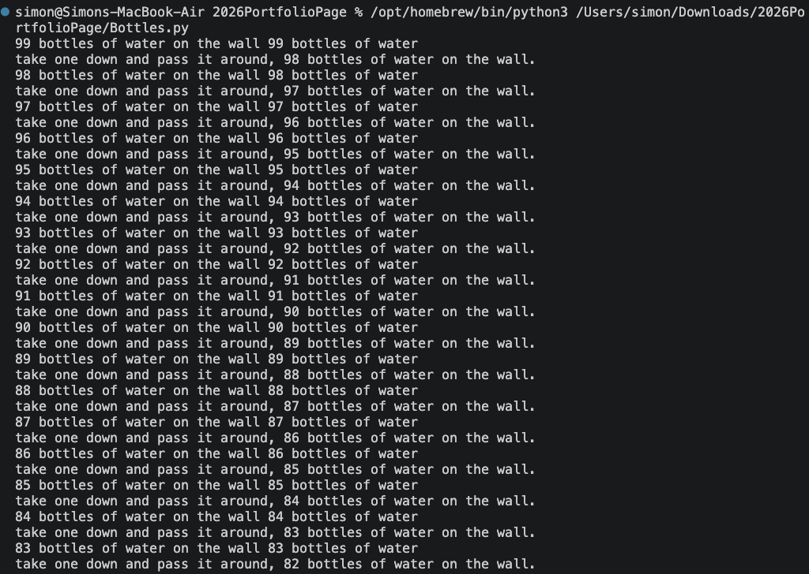
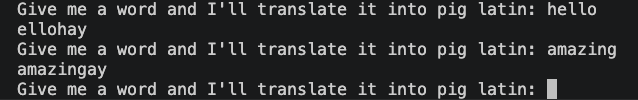
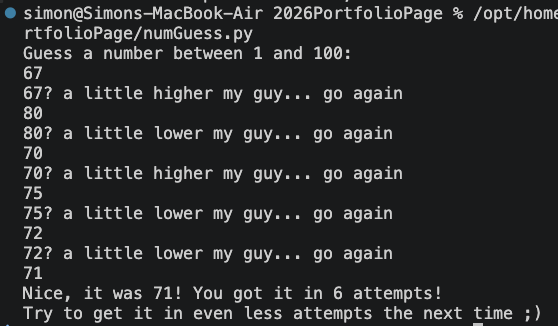

The game uses pygame and functions like regular Flappy Bird with the user having to jump through gaps in pipes. As the user progresses through each pair of pipes the score increases by one and the game continues infinitely until the user loses, where they are prompted with a game over screen where the high score is saved and the user can play again.
Source Code
The bottles song functions as a program in terminal which runs the classic song of "99 bottles of beer on the wall". The program prints all 100 lines of the song and ends the song with a new line which ends the song grammatically correct. The program executes a minimal size of code utilizing for loops wherever possible.
Source Code
The pig latin app is an app which turns any word inputed into the terminal into a pig latin translation of the app. It does this by cycling throught and analyzing the inputed word charecter by charecter using for loops and if statements. It translates the word by taking the first letter of the word and adding it to the end of the word plus an "ay" unless the word starts with a vowel then it only adds the "ay"
Source Code
The game functions using terminal and prompts the user to enter a value 1 - 100. If the user guesses too high or too low the program will tell the user and the user will be prompted to guess again until the right number is guessed. Once this happens the program congradulates the player and resets for the player to play again.
Source Code